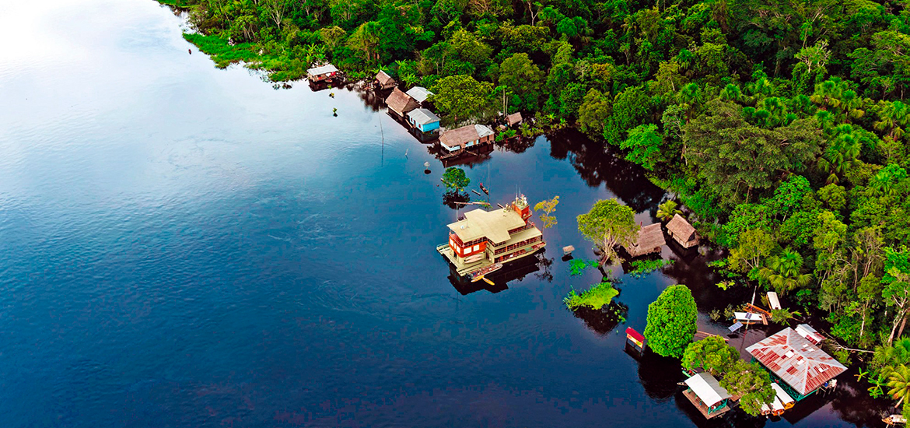
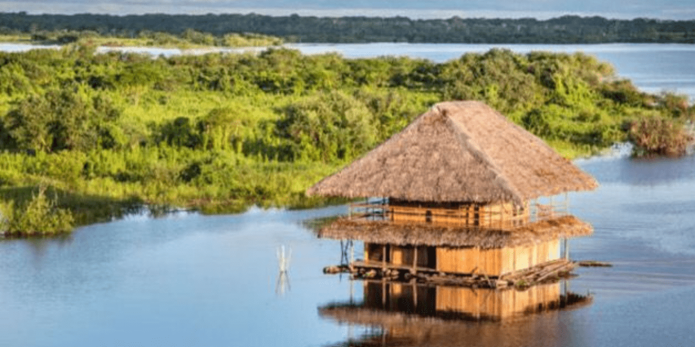
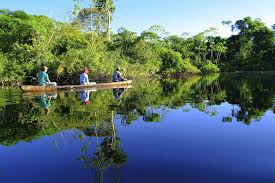

Reserva Nacional Pacaya Samiria: El pulmón del Amazonas peruano
La Reserva Nacional Pacaya Samiria es una de las áreas protegidas más grandes del Perú, ubicada en la región de Loreto. Conocida por su biodiversidad única, alberga una gran variedad de fauna y flora en sus vastos humedales y bosques tropicales. Es un destino ideal para los amantes de la naturaleza y la aventura.
Historia
Creada en 1982, la Reserva Nacional Pacaya Samiria protege más de 2 millones de hectáreas de selva amazónica. Su nombre proviene de los ríos Pacaya y Samiria, que atraviesan esta vasta región de humedales y ecosistemas acuáticos. Es un área fundamental para la conservación de especies emblemáticas como el delfín rosado y el manatí amazónico.



Horarios y Ubicación
- Ubicación: Reserva Nacional Pacaya Samiria, región de Loreto, Perú.
- Horarios de visita: De 6:00 a.m. a 5:00 p.m.
- Costo de entrada: Entrada con tarifa según tipo de visitante.
Consejos para Visitantes
- Lleva ropa ligera y repelente de insectos: El clima es cálido y húmedo, con abundante presencia de mosquitos.
- Usa botas de trekking: Algunas zonas pueden ser fangosas, especialmente en temporada de lluvias.
- Realiza tours guiados: Un guía local te ayudará a explorar la reserva de manera segura y responsable.
- Respeta la fauna y flora: Evita dejar basura y no interfieras con los animales en su hábitat natural.
- Explora en bote: Los recorridos en canoa o bote te permitirán ver la riqueza natural de la reserva desde otra perspectiva.